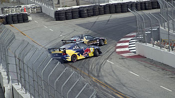

Назад
Дрифт
 Дрифт — техника прохождения поворотов и вид автоспорта, характеризующиеся использованием управляемого заноса на максимально возможных для удержания на трассе скорости и угла к траектории. Соревнования проводятся на асфальте, льду, трассах с большим количеством поворотов. Также вид автоспорта базирующегося на зрелищности прохождения поворотов в заносе. В основном используются автомобили с задним приводом.
История возникновения дрифта
Использование заноса в ралли.Изначально дрифт как спорт появился в Японии. Если верить легендам автоспорта, то впервые дрифт появился в Японии в 60-е. Так как дрифтинг начал развитие сразу в нескольких городах Японии, то точное место его рождения определить нельзя. В истории происхождения дрифта известны такие города, как Ирохазака, Роккосан, Хаконе и все возможные холмистые дороги в Нагано.
 Современный дрифт, как и большинство профессиональных гонок, во время своего зарождения проводился нелегально. Гонки проходили на извилистых загородных дорогах, которые назывались «Тоге». Самых увлеченных энтузиастов называли «Роллинг зоку», они-то и состязались на Тоге. Целью этих гонщиков было улучшить своё время прохождения трассы вплоть до миллисекунд. В результате чего часть Роллинг зоку стали применять технические приемы вождения раллистов, приемы прохождения поворотов быстро и без потери инерции. С использованием раллийной техники прохождения поворотов водители на Тоге начали замечать, что уровень владения машиной и время прохождения улучшились, при этом гонка стала напряженней. Именно на Тоге зародился дрифт.
Современный дрифт, как и большинство профессиональных гонок, во время своего зарождения проводился нелегально. Гонки проходили на извилистых загородных дорогах, которые назывались «Тоге». Самых увлеченных энтузиастов называли «Роллинг зоку», они-то и состязались на Тоге. Целью этих гонщиков было улучшить своё время прохождения трассы вплоть до миллисекунд. В результате чего часть Роллинг зоку стали применять технические приемы вождения раллистов, приемы прохождения поворотов быстро и без потери инерции. С использованием раллийной техники прохождения поворотов водители на Тоге начали замечать, что уровень владения машиной и время прохождения улучшились, при этом гонка стала напряженней. Именно на Тоге зародился дрифт.